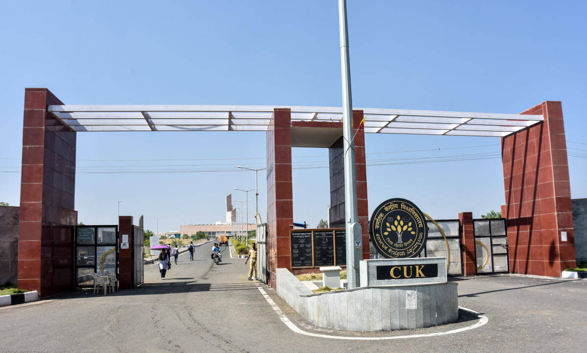
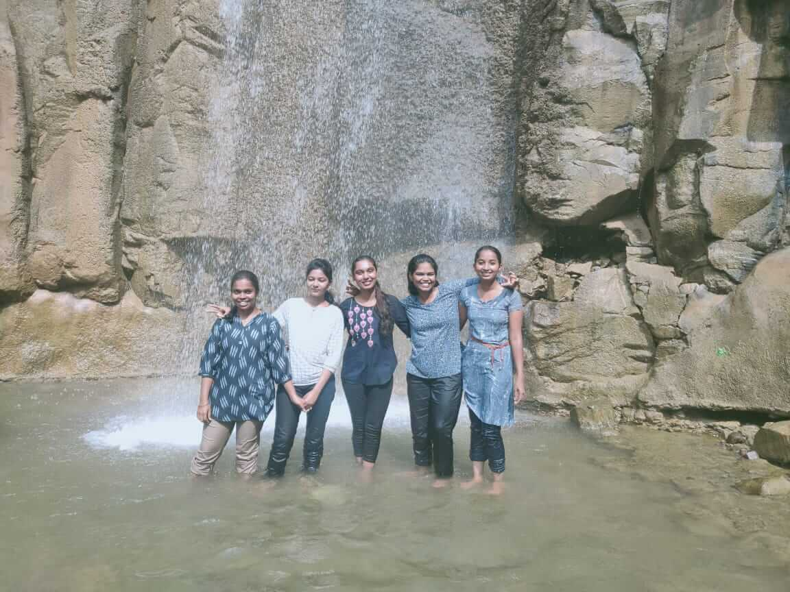
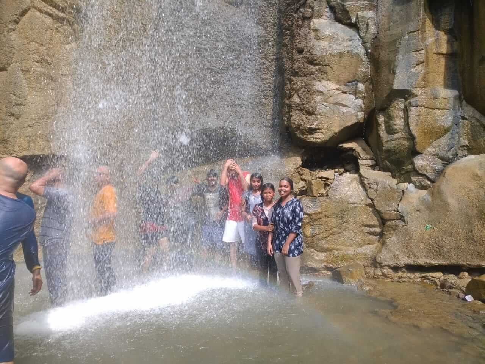

Central University of Karnataka (CUK) is a relatively young institution with commitment for academic excellence and social relevance. For the past eight years we expressed this spirit through our acts and deeds, and achieved a significant growth in infrastructure, academic pursuits and intellectual contribution making its own mark on the national canvas. The committed faculty, students and other stakeholders have made this achievement possible.
The Central University of Karnataka is situated in a geographically remote and culturally diverse place, ‘Kalaburagi’. Historically, it is the land of intellectuals and revolutionary leaders. This inspires us to retain the spirit of land and make the University a cradle of knowledge and global institute covering the fields of Humanities, Arts, Commerce, Management and Science & Technology. At CUK the special emphasis is on knowledge assimilation, dissemination, creation and social outreach.
The University has been taking appropriate initiatives to address the water scarcity and sustainable energy through smart solutions like rain water harvesting, solar power generation and efficient resource management. Today, the campus is on its way to become a self sustained habitat. At present there are twenty-one departments under nine schools.
I am happy that the CUK is part of CUCET 2018 consortium for admissions in the various programmes for ensuing academic year.
I sincerely wish student and academic fraternity happy and meaningful moments at CUK.